Virtual production and ICVFX
LED volumes, Unreal Engine, nDisplay, camera tracking, lens calibration, OCIO, genlock, timecode and operating workflows.
Portfolio
Selected projects and practice areas from virtual production, motion capture, filmmaking, live events and educational technology.
A practical map of the recurring work: image-making, real-time systems, live production, software infrastructure and teaching.
LED volumes, Unreal Engine, nDisplay, camera tracking, lens calibration, OCIO, genlock, timecode and operating workflows.
Unreal Engine, Blackmagic Ultimatte, DeckLink, LiveLink, NDI, Spout, keyed camera feeds and color-aware display pipelines.
Rokoko, CHINGMU, AI visual mocap, virtual camera work, LiveLink Face, MetaHuman workflows and multi-operator show control.
Cinematography, camera crew, gaffer work, editing, visual effects, motion graphics, 3D animation and final-image delivery.
Projection mapping, LED playback, vMix, Resolume, HiRender, NDI streaming, Dante audio, lighting control and TouchDesigner/Unity work.
Go, C++, JavaScript, Python, C#, Linux, Docker, Proxmox, TrueNAS, custom tools, AI-assisted workflows and production networks.
Virtual production
In 2021 I built one of Hong Kong's early LED ICVFX stages through independent research, hardware procurement, rigging, Unreal Engine configuration and camera-system integration.
The work covered render nodes, genlock, networking, nDisplay, camera tracking, lens calibration, color pipeline decisions and custom control tooling.
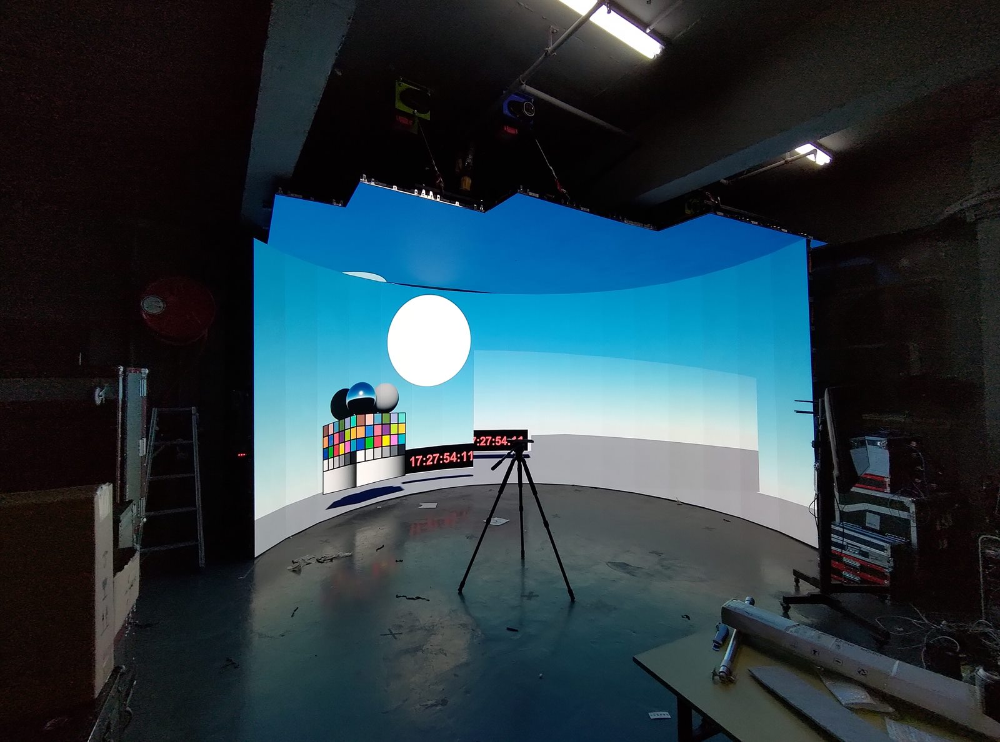
Motion capture and virtual artists
For virtual artists and VTuber productions, I design systems that connect performer tracking, Unreal Engine, virtual cameras, media routing and livestream operations into a stable show workflow.
That includes Rokoko, CHINGMU, AI visual mocap, LiveLink, LiveLink Face, NDI and multi-operator control room planning.
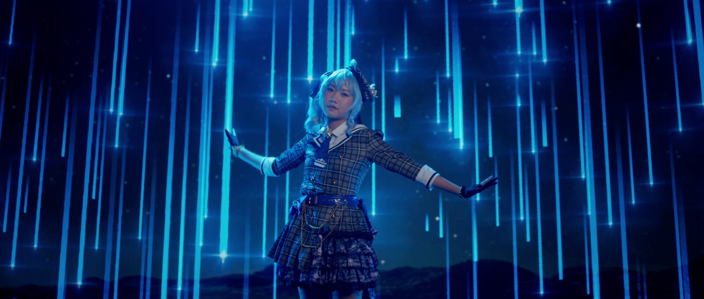
Hands-on production roles include director of photography, camera crew, gaffer, editor, VFX artist, motion graphics artist and 3D animator.
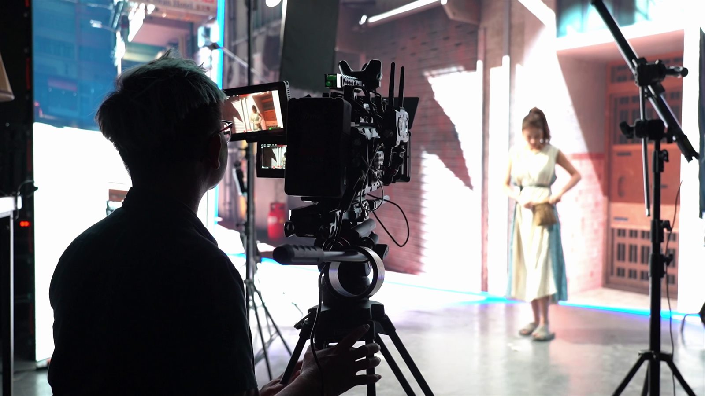
On-set image craft, lighting decisions and camera operation for music videos and commercial work.
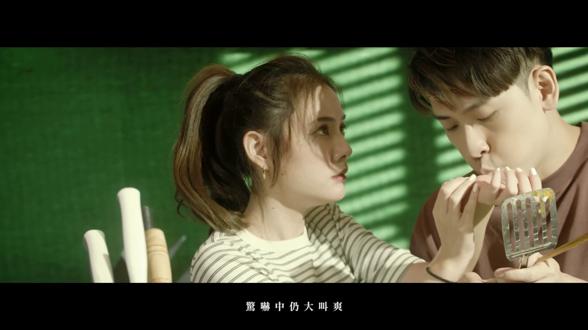
Post-production through DaVinci Resolve, Adobe Creative Cloud, Fusion, Blender and Unreal rendering.
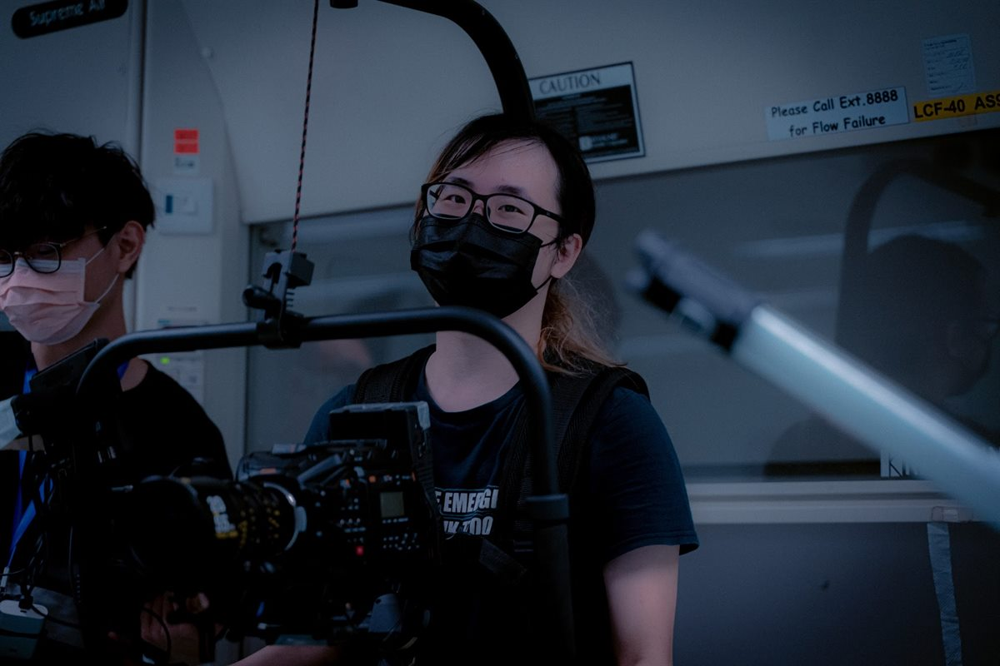
Flexible crew roles that bridge practical set work and technical problem-solving.
Events and interactive systems
Event production experience includes visual mixing, LED walls, projection mapping, vMix, Resolume Arena, HiRender, NDI, streaming, Dante audio, lighting consoles and TouchDesigner/Unity interactive work.
The same systems mindset also supports software and network administration for production environments.
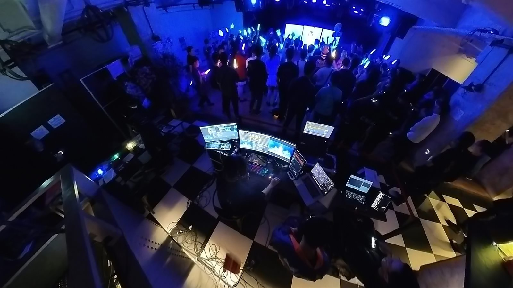
Teach and learn
At City University of Hong Kong I developed AR/MR solutions for chemistry teaching and supervised student projects. I also prepare and teach media courses covering editing, multi-camera broadcast, photography and filmmaking.
Teaching keeps the technical practice accountable: if a workflow cannot be explained and repeated, it is not yet production-ready.
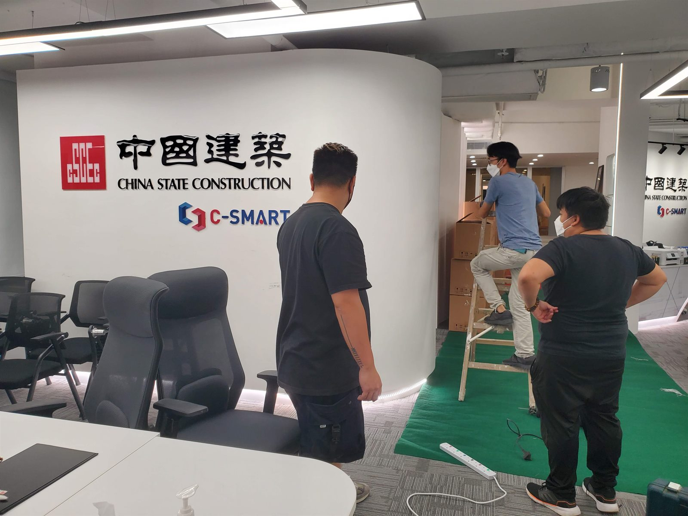
Selected work areas from the portfolio PDF, using source imagery that matches the section being described. CV credits are listed separately where they provide extra context.
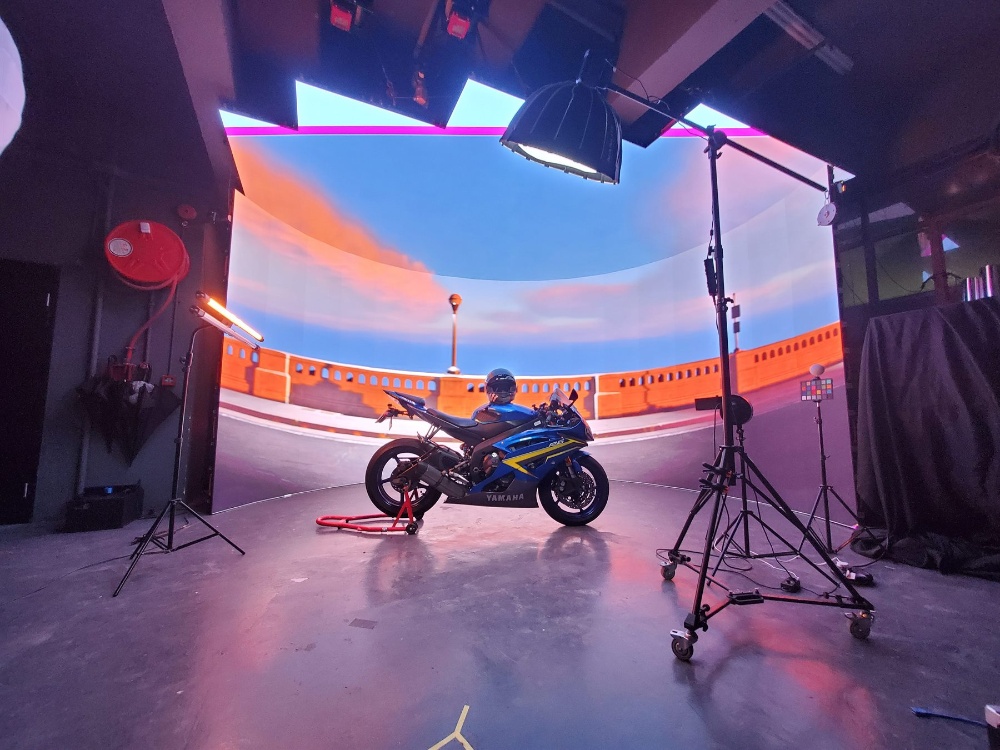
One of Hong Kong's early LED ICVFX stages, built through hands-on panel scouting, rigging, render nodes, networking, Unreal Engine, nDisplay, tracking and lens calibration.
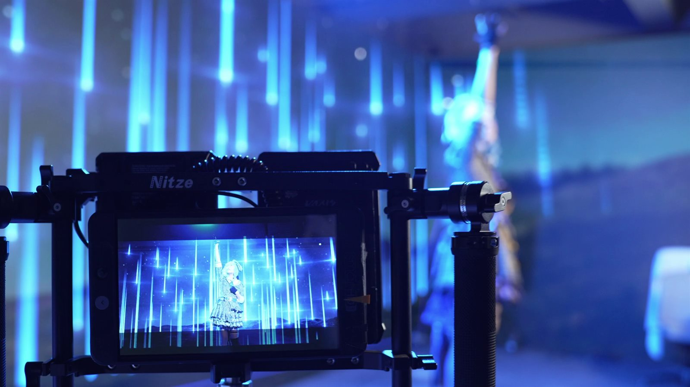
Real-time performance pipelines for virtual artists and VTubers, connecting mocap, Unreal scenes, virtual cameras, media servers and livestream operations.
Production and post roles across cinematography, camera crew, lighting, editing, visual effects, motion graphics, 3D animation and final delivery.
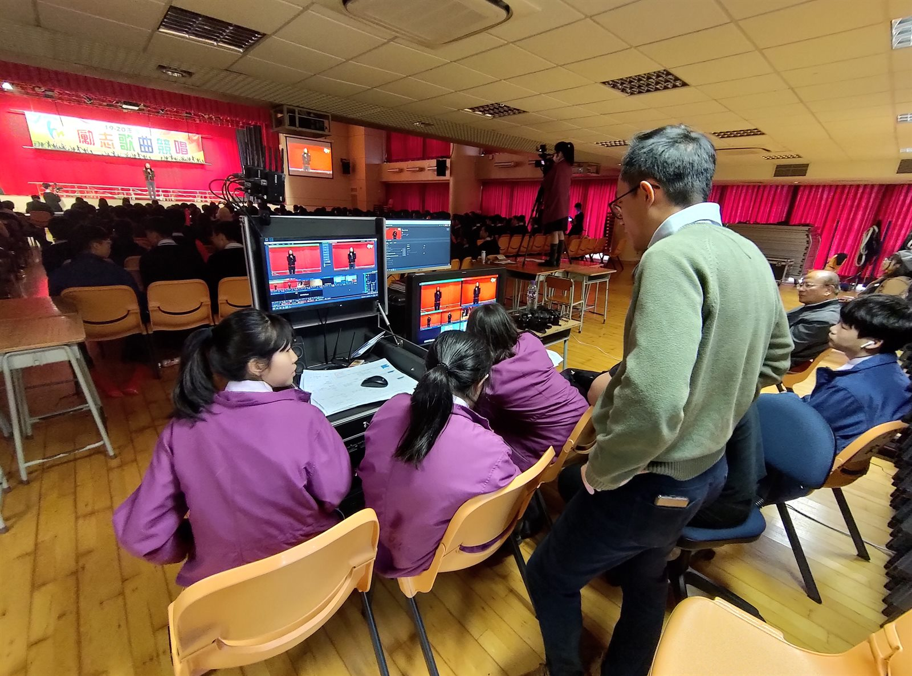
Projection mapping, LED playback, visual mixing, streaming, lighting, audio routing and control-room workflows for live and hybrid events.
Teaching and applied-technology work covering editing, DaVinci Resolve, multi-camera production, photography, filmmaking and AR/MR learning tools.
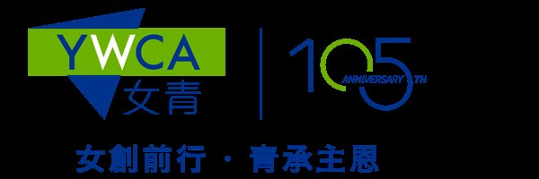
Representative client artwork from the supplied portfolio media, included as part of the portfolio's personal-client section.
Technical direction for virtual production, motion capture, virtual concerts, interactive events and real-time production systems.
System Architect / System Analyst for AI-driven insurance claim automation and foundational software architecture in a regulated business environment.
Research assistant work developing AR/MR tools for chemistry teaching, supervising student projects and supporting educational media workflows.
Event technician work covering visual macros, visual mixing systems, LED walls and live-stream production support.
Visual effects artist credit for Forensic Heroes IV using Adobe After Effects for post-production.
Venue technical specialist and event audio engineer work covering live audio, event systems and stage technology foundations.